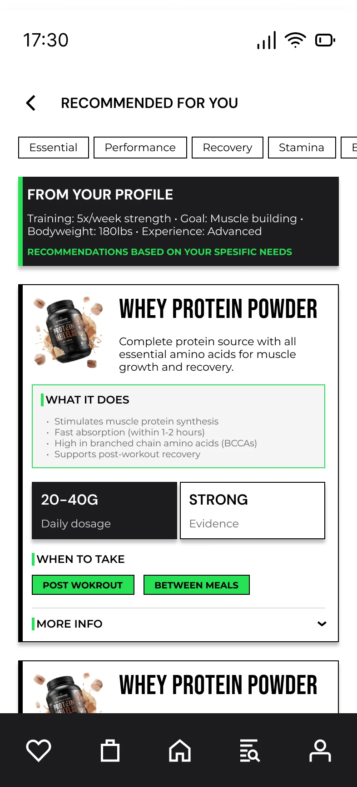
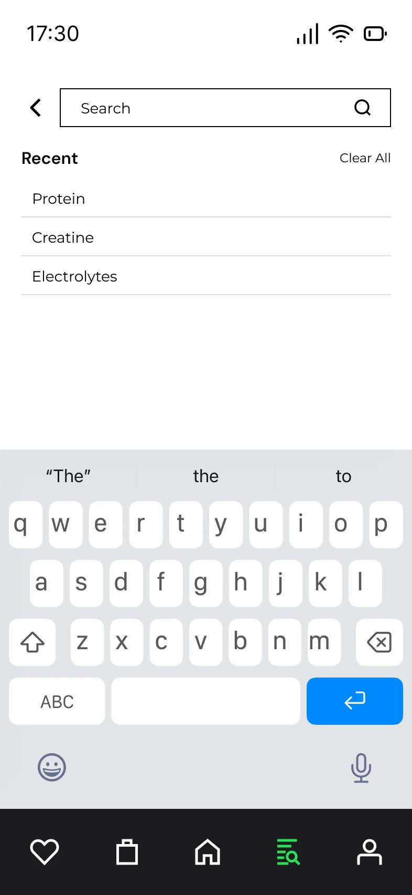
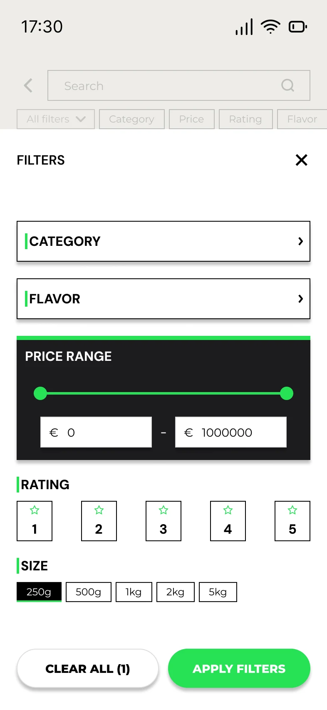
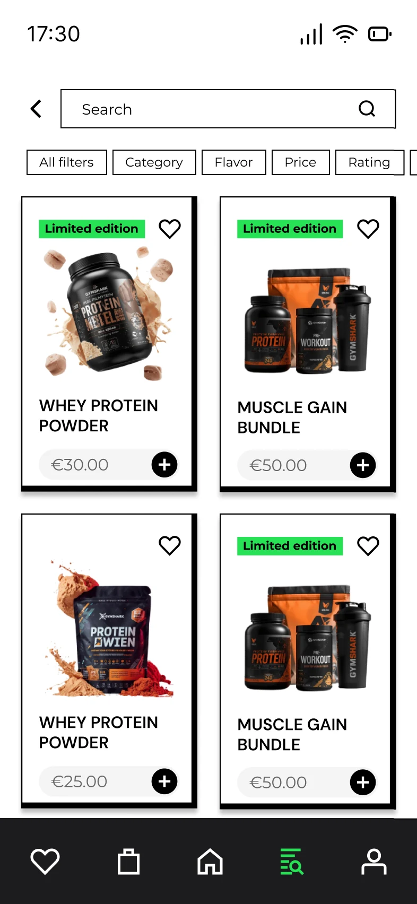
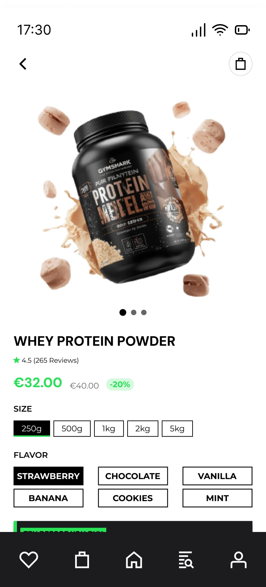
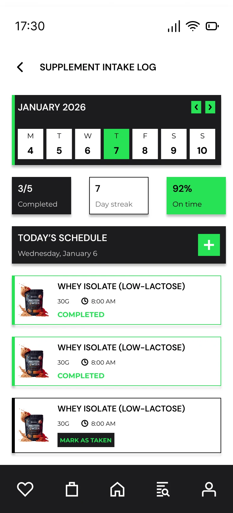
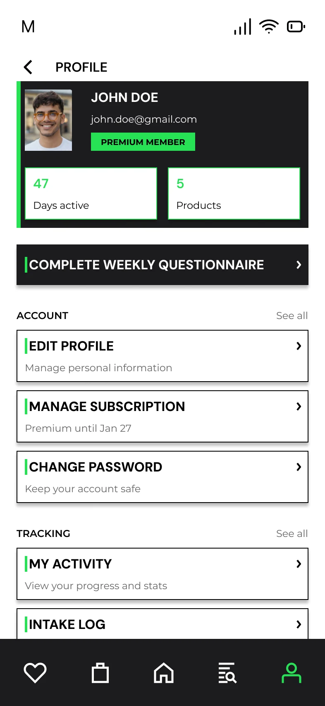
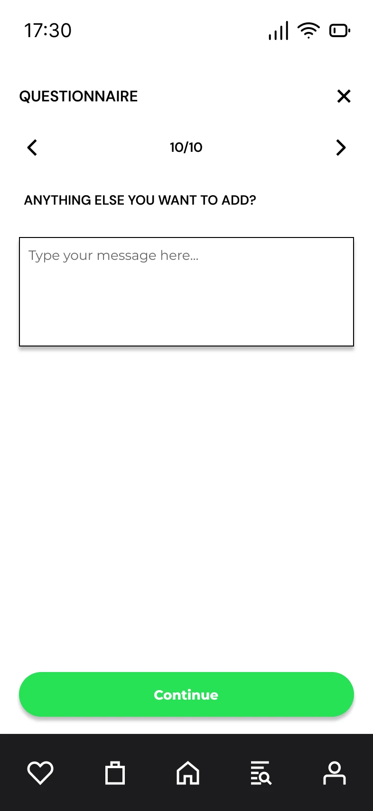
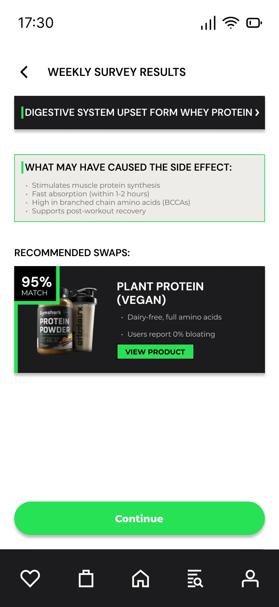

Myprotein
Supplement shopping
Supplement shopping, including protein products and sample formats.
A reference for trial and sample formats.
A concept Gymshark brand that helps people understand supplements and track what they take.
An independent concept, not affiliated with Gymshark
View prototypePeople who are new to the gym can feel pressured by social media and fitness influencers to start taking supplements before they understand whether they need them. They may follow recommendations without knowing what a product does, how much to take, or what side effects it can have. Without clear guidance, they risk wasting money on unsuitable products or taking supplements incorrectly, which could harm their health.
Help users choose supplements they understand, try them before buying a full pack and keep track of their intake.
Conflicting advice makes choosing difficult. A full pack can be wasted if the user doesn’t like the flavour or the supplement causes side effects. Keeping a routine can also be hard.
Give people a reason to return after buying, with ongoing support through the optional premium plan.
I looked at Gymshark’s audience and compared supplement shops with nutrition and fitness apps.
What I took from it
Supplement shopping
Supplement shopping, including protein products and sample formats.
A reference for trial and sample formats.
Food and progress tracking
Food logging, calorie and macro tracking, and progress tools.
A reference for making repeated actions and progress visible.
Planning and routine
Calorie and macro tracking, with additional planning and fasting tools.
A reference for structured daily guidance.
Confusion about ingredients and use led me to place explanations alongside product recommendations.
Recommendations use the person’s profile and training goals to explain why a product is suggested.
The daily plan brings scheduled intake and logging together.
John follows a gym programme but has no clear supplement routine. He wants to understand what suits his goals and fit it around his studies.
The concept earns revenue through supplement sales and an optional subscription for routine planning.
Product information, recommendations, shopping and trial packs.
Personalised plans with reminders, intake logging and a weekly questionnaire.
€7.99 monthly€5/month with an annual subscription (€60/year)
I mapped the experience from discovering the app to following a supplement routine. This helped me place product explanations before purchase and include reminders and feedback after it.
I organised the tasks into shopping, product education and routine management. This helped define the free experience and what the premium plan would include.
I grouped the screens around finding products, understanding them and managing a routine. Home and Search lead to product information, while Profile holds goals and intake tracking.
The same visual system runs through shopping and supplement tracking.
GymsharkSupplements
Black
White
Green
#28E156The angular symbol and condensed lettering give the brand a sharp look. The symbol also works on its own at smaller sizes, while the full logo introduces the supplement range.
Symbol variations
Bebas Neue
Log your daily supplement intake
Used for the home banner, product detail titles and subscription prices.
Montserrat
Get supplement plans that match your workouts.
Regular for explanations and secondary text. SemiBold and Bold for categories. ExtraBold for action labels.
DM Sans
Whey protein powder
SemiBold for product card names and calendar labels. ExtraBold for emphasised calendar text.
Pain point: unsure which supplements are useful.
Product recommendations explain their purpose and include usage and ingredient information.

Search, filters, and browsing give users different ways to narrow down the catalogue.



Challenge: a full pack is wasted if the flavour or side effects don’t suit you.
Trial packs let users try a supplement before buying a full pack, including its flavour and how it agrees with them.

Pain point: forgetting doses and giving up on a complex routine.
The calendar shows what is planned for the day and which intakes have been logged.

Challenge: conflicting advice, and side effects after buying.
The first recommendation gives users a place to start. Once they’ve tried their supplement plan, they can use the weekly questionnaire in their account to report any side effects they’ve noticed. Based on their answers, the results show what might be causing those effects and what they could do next, including whether to consider swapping a supplement.



I made motion studies around consistency, adaptability and gradual progress, then explored how those ideas could appear in the app.
Rhythm and repetition express the consistency of a routine.
Flexible movement explores the idea of responding to different goals and needs.
Gradual movement explores guidance and a clear sense of progression.
Mapping the tasks helped me organise a large solo project. Reusable components kept the screens consistent.
Developing the identity meant deciding which Gymshark elements to carry over and where the supplement brand could differ.
Test whether people can understand a recommendation, choose a product and log intake without help.
Find out which features people would return to and whether the premium plan is worth paying for.
Have specialists review supplement guidance and recommendation logic.